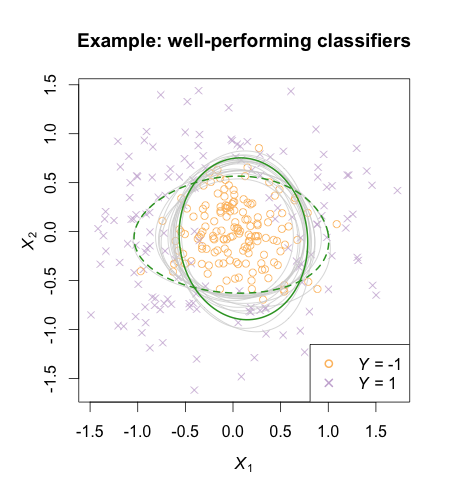

Research
Variable importance when all models are wrong, but many are useful
Data analysts are often interested in the importance of covariates for predicting outcomes. Specifically, analysts may ask: how much does a given prediction model depend on a set of covariates in order to predict well? To inform this question, I worked with Cynthia Rudin & Francesca Dominici to develop "Model Reliance" (MR), a permutation-based measure inspired by Breiman (2001). We draw connections from MR to conditional causal effects, linear model regression coefficients, and asymptotically normal U-statistic estimators.
However, because it is often the case that many models predict well, analysts may also be interested in knowing the degree to which any well-performing model (from a prespecified model class) relies on covariates of interest. We refer to this quantity as "Model Class Reliance." Roughly speaking, MCR captures the diversity of mechanisms underlying different well-performing prediction models.
We show an illustration of MCR below. The task here is to classify a simulated outcome \(Y\) ("x" label or "o" label) based on two covariates, \(X_1\) and \(X_2\) (shown on the x and y axes). We use grey lines to mark the classification boundaries for a subset of classifiers with low in-sample prediction loss. Each model relies on information in \(X_1\) to a different degree. We use dark green lines to mark models that approximately obtain the lowest (solid line) and highest (dashed line) reliance on the covariate \(X_1\).

- arXiv paper on variable importance and the "Rashomon" effect
Fast, exact bootstrap principal component analysis for high dimensional data (i.e. >1 million variables)
Principal Component Analysis (PCA) is a common dimension reduction step in many algorithms applied to high dimensional data, where the number of measurements per subject is much greater than the number of subjects. The resulting principal components (PCs) are random test statistics with sampling variability (i.e. if a new sample was recruited, the PCs for the new sample would be different). It is important to estimate this sampling variability, and the extent to which this variability propagates into test statistics that depend on PCA. A bootstrap procedure provides one method for variance estimation, but often comes with a prohibitively heavy computational burden.
To ease this burden, I worked with Vadim Zipunnikov and Brian Caffo to develop an exact method for calculating PCs in bootstrap samples that is an order of magnitude faster than the standard method. I applied this method to estimate standard errors of the 3 leading PCs of a brain MRI dataset (≈ 3 million voxels, 352 subjects) based on 1000 bootstrap samples (see below). Computation time was reduced from 4 days to 47 minutes, using a standard laptop. My work on this project earned me our department's June B. Culley Award for outstanding achievement on a school-wide oral examination paper.

The key intuition for this speed improvement comes from the fact that all bootstrap samples are contained in the same n-dimensional subspace as the original sample (where n is the sample size). If we represent bootstrap samples by their n-dimensional coordinates relative to this subspace, we can dramatically reduce computation times and memory requirements.
- Paper link
- Poster - JSM 2014
- bootSVD R package for easy implementation of the bootstrap procedure
- ggBrain R package for creating brain image figures
Evidence based data analysis -- studying statistical methodology in practice
Much statistical research focuses on the sampling variability of estimators under different theoretical scenarios. However, little is known on the sampling variability that is introduced when human investigators implement analysis methods differently. Knowledge on this human variability could form a key aspect of recommending statistical methods to investigators, and lead to improved reproducibility. In work with Jeff Leek, G. Brooke Anderson, and Roger Peng, we have proposed the concept of evidence based data analysis: the scientific study of how statistical methods perform in practice, when they are implemented, sometimes imperfectly, by analysts of different levels of statistical training.
In our work, we specifically looked at the common statistical practice of using exploratory data analysis (EDA) to identify significant predictors to include in a model. We conducted a survey in a statistics massive open online course, and asked students to rate the relationships shown in scatterplots as either significant or non-significant at the 0.05 level. Initial rating accuracy was poor, but in some cases improved with practice. Our work sheds light on how fostering statistical literacy can increase the clarity of communication in science, on the effectiveness of EDA for variable selection, and on the extent of damage caused when analysts do not correct for multiple hypotheses that are tested informally in the EDA process.
 Accuracy with which users can classify relationships that are truly significant (blue) and that are non-significant (red) on their first attempt of the survey. Each row denotes a different presentation style for the scatterplot shown (e.g. whether Lowess trend lines were added). See the full paper for more details.
Accuracy with which users can classify relationships that are truly significant (blue) and that are non-significant (red) on their first attempt of the survey. Each row denotes a different presentation style for the scatterplot shown (e.g. whether Lowess trend lines were added). See the full paper for more details.
Predicting biopsy results and latent health states for patients with low-risk prostate cancer
For patients with low-risk prostate cancer, prostate biopsies are a highly invasive aspect of active surveillance. I worked with Yates Coley & Scott Zeger on a Bayesian Hierarchical model to predict a patient's latent cancer state based on data from previous prostate biopsies and prostate-specific antigen (PSA) measurements. The goal of this modeling approach is to help guide treatment decisions, and to reduce the number of unnecessary biopsies and prostatectomies.
My role in this project was to apply a method for fast latent state estimation based on new patient data. This would allow doctors to give patients in-clinic risk estimates, without having to refit the entire model with batch MCMC. The proposed method (based on Importance Sampling) does not require novel Bayesian techniques, but it does address one of the obstacles to applying Bayesian Hierarchical models in clinical settings.
Optimizing adaptive clinical trials
When designing a clinical trial, study coordinators often have prior evidence that the treatment might work better in a one subpopulation than another. One strategy in these scenarios is to conduct a trial with an adaptive enrollment criteria, where investigators decide whether or not to continue enrolling patients from each subpopulation based on interim analyses of whether each subpopulation is benefiting. In order for the type I error and the power of the trial to be calculable, the decision rules for changing enrollment must be set before the trial starts. My work in this area centers on optimizing the decision rules of adaptive enrollment trial designs to meet specific objectives, such as expected sample size, alpha level, and power for the trial.